In hierdie hoofstuk gaan jy die werk hersien wat jy in graad 8 gedoen het oor elektriese stelsels en beheer. Jy gaan ook eenvoudige stroombane, stroombaandiagramme, en die koppeling van selle, lampe en skakelaars, in serie en parallel, hersien. Daarna gaan jy aksienavorsing doen oor die effek van veranderende stroomspanning in 'n stroombaan.
1.1 Hersiening 1: Simbole van komponente 2
1.2 Hersiening 2: Eenvoudige stroombane 11
1.3 Toets stroomspanning en stroom in stroombane 13

Figuur 1: 'n Flits
1.1 Hersiening 1: Simbole van komponente
"Komponente" is die dele wat in 'n elektriese stroombaan aanmekaar gekoppel word.
Onthou jy hoe die simbole vir selle, lampe en skakelaars lyk?
Onthou jy wat die verskil is tussen die koppeling van komponente in serie en parallel? Kom ons kyk wat jy kan onthou.
Jy het reeds geleer dat 'n elektriese stroombaan 'n geslote baan is waardeur stroom vloei.
- •
- • 'n kragbron soos 'n sel,
- • 'n geleier, en
- • 'n lading wat weerstand bied, soos 'n lamp.
Selle in serie
Twee of meer selle kan in serie gekoppel wees om diestroomspanning in die stroombaan te verhoog.Figuur 2 hieronder wys twee selle wat in serie in 'nstroombaan gekoppel is. Die positiewe terminaal vansel A is aan die lamp gekoppel. Die negatieweterminaal van sel A is aan die positiewe terminaal van sel B gekoppel, en die negatiewe terminaal van sel B is aan die ander terminaal van die lamp gekoppel.
In serie beteken dat die selle end tot end gekoppel is en dat die stroombaan om die beurt deur elke sel vloei.
1. Teken 'n stroombaandiagram van die stroombaan in figuur 2 in die spasie regs.

Figuur 2: Twee selle in serie wat gekoppel is aan 'n lamp
2. Figuur 3 hieronder wys drie selle wat in serie in 'n stroombaan gekoppel is. Teken 'n stroombaandiagram van die stroombaan in figuur 3 in die spasie regs.

Figuur 3: Drie selle in serie wat aan 'n lamp gekoppel is
- •
Selle in parallel
Twee of meer selle kan ook "in parallel" gekoppel wees. 'n Parallelle stroombaan het twee of meer verskillende bane waardeur die stroom kan vloei.
Figuur 4 hieronder wys twee selle wat in parallel in 'n stroombaan gekoppel is. Die positiewe terminale van albei selle is aan mekaar en aan die lamp gekoppel. Die negatiewe terminale van albei selle is aan mekaar en aan die ander terminaal van die lamp gekoppel.
3. Teken 'n stroombaandiagram van die stroombaan in figuur 4 in die spasie regs.
Figuur 4: Drie selle in parallel aan 'n lamp gekoppel
- •
Lampe in serie
Twee of meer lampe kan ook in serie gekoppel wees.
Die diagramme hieronder wys stroombaandiagramme van twee en drie lampe wat in serie met 'n battery gekoppel is. Die positiewe terminaal van die battery (+B) is gekoppel aan lamp 1, die ander kant van lamp 1 is gekoppel aan lamp 2, die ander kant van lamp 2 is gekoppel aan die negatiewe terminaal (B-) van die battery, ensovoorts.
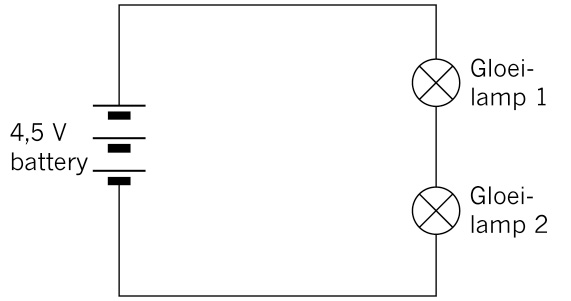
Figuur 5: Twee lampe in serie
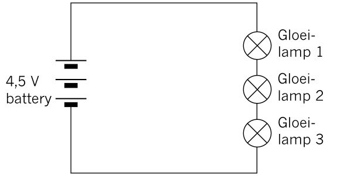
Figuur 6: Drie lampe in serie
4. Hoe verander die stroombaan en stroomspanning in die stroombaan indien jy die aantal lampe in die stroombaan vermeerder?
- •
Lampe in parallel
Twee of meer lampe kan ook in parallel aan 'n battery gekoppel wees, soos dit in die diagramme hieronder gewys word. Die positiewe terminaal van die battery is direk gekoppel aan een kant van die lamp en die negatiewe terminaal van die battery is gekoppel aan die ander kant van die lamp.
 Figuur 7: Stroombaandiagram van twee
lampe in parallel
Figuur 7: Stroombaandiagram van twee
lampe in parallel

Figuur 8: Stroombaandiagram van drie lampe in parallel
- •
5. Kyk na die stroombaandiagram hieronder en beantwoord die vrae:

Figuur 9
(a) Wat is die stroomspanningsval oor lampe 1 en 2?
wees as gevolg van die interne weerstand van die battery).
(b) Die totale stroom in die stroombaan is 10 A. Indien lamp 1 'n stroom van 4 A het wat daardeur vloei, wat sal die stroom wat deur lamp 2 vloei wees?
Skakelaars in serie en parallel
In 'n stroombaan met een skakelaar beheer die skakelaar óf die stroom deur die stroombaan gaan vloei óf nie. Indien die skakelaar oop is, sal geen stroom deurvloei nie aangesien die stroombaan nie voltooid is nie. Die geslote skakelaar laat die stroom vloei.

Figuur 10: Simbole vir 'n oop skakelaar en 'n geslote skakelaar
Ons kan twee of meer skakelaars gebruik om die komponente in 'n stroombaan op meer komplekse wyses te beheer.
- •
Skakelaars in serie
In die stroombaandiagram hieronder, is daar twee skakelaars wat in serie gekoppel is. Dit gee aan ons vier verskillende skakelaar kombinasies. Hulle is:
- • skakelaar A en B is beide oop,
- • skakelaar A is oop en B is geslote,
- • skakelaar A is geslote en B is oop, en
- • albei skakelaars is geslote.
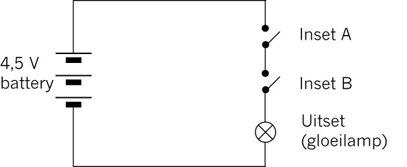
Figuur 11: Stroombaan met twee skakelaars in serie
Sien jy dat die stroom nie deur die stroombaan kan vloei wanneer óf skakelaar A óf skakelaar B oop is nie. Albei skakelaars moet geslote wees vir die lamp om te gloei.
6. In die tabel hieronder beteken "0" af of oop, en "1" beteken aan of geslote. Voltooi die tabel om al die moontlike verskillende kombinasies in die stroombaan in figuur 11 aan te dui hier. Om jou te help is die eerste twee rye van die tabel reeds vir jou voltooi. Maak seker dat jy hierdie twee rye goed verstaan voor jy die res van die tabel voltooi.
|
Inset A |
Inset B |
Uitset |
|
0 |
0 |
0 |
|
0 |
1 |
0 |
|
1 |
0 |
0 |
|
1 |
1 |
1 |
Die tabel wat hierdie kombinasies wys word die waarheidstabel genoem.
- •
Skakelaars in parallel
In die stroombaan hieronder is daar twee skakelaars in parallel gekoppel. Dit gee ook aan ons vier verskillende skakelaar-kombinasies.
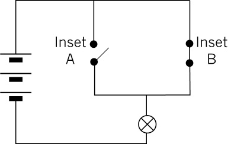
Figuur 12: Stroombaan met twee skakelaars in parallel
Sien jy dat die stroom deur die geslote skakelaar vloei, selfs al is die ander skakelaar oop?
7. Voltooi die waarheidstabel vir figuur 12 hieronder.
|
Inset A |
Inset B |
Uitset |
- •
Vrae vir huiswerk
1. Kyk na elk van die situasies en sê of die lampe aan of sal af wees in elke situasie. Verduidelik jou antwoord.
(a)

Figuur 13
(b)
Figuur 14
(c)
Figuur 15
2. 'n Ketel moet eers by die muurprop en dan by die ketel self aangeskakel word.
(a) Vul die waarheidstabel in om al die moontlike kombinasies aan te dui.
|
Muurprop skakelaar |
Ketel skakelaar |
Uitset |
|
0 |
0 |
0 |
|
0 |
1 |
0 |
|
1 |
0 |
0 |
|
1 |
1 |
1 |
(b) Is hierdie 'n EN-funksie of 'n OF-funksie? Verduidelik jou antwoord.

1.2 Hersiening 2: Eenvoudige stroombane
In hierdie les gaan jy eenvoudige stroombane opstel, met die doel om dit wat jy oor die opstel van stroombane in graad 8 geleer het, te hersien.
Jy benodig die volgende items vir hierdie aktiwiteit:
- • twee AA selle in sel houers,
- • geleidingdraad,
- • 'n skakelaar, en
- • twee lampe.
Neem kennis dat jy 'n tuisgemaakte skakelaar en sel houer (gemaak van isoleerband) vir hierdie aktiwiteit kan gebruik.
1. Kyk na die stroombaan hieronder.
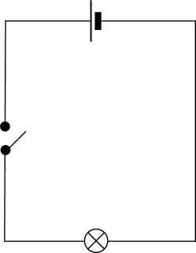
Figure 16
Stel hierdie stroombaan op en maak seker dat dit behoorlik werk deur die skakelaar toe te maak.
(a) Het die lig aangegaan?
Ja, die lig het aangegaan.
Sodra jy die stroombaan kry om behoorlik te werk, kan jy aanbeweeg na vraag 2. Indien jy moet, kan jy self die stroombaan ondersoek deur die volgende stappe te volg:
- • Indien die lamp nie aangaan nie, maar die drade raak warm, het jy heel moontlik 'n kortsluiting. Dit beteken dat die lamp nie korrek in die stroombaan gekoppel is nie. Maak seker dat die lamp behoorlik in die stroombaan gekoppel is.
- • Indien die lamp steeds nie wil aanskakel nie, ondersoek deur elke komponent en die verbindingsdraad deur dit een vir een te vervang. So sal jy beslis kan identifiseer wat die probleem is.
2. Voeg nog 'n lamp in serie by die eerste stroombaan.
(a) Teken 'n stroombaandiagram vir hierdie stroombaan.
|
|

(b) Wat merk jy op oor die helderheid van die lampe?
Albei lampe is flouer as die een wat oorspronklik op sy eie gekoppel was.
3. Stel nou dieselfde stroombaan op en voeg nog 'n lamp in serie by die stroombaan.
(a) Teken die stroombaandiagram vir hierdie nuwe stroombaan.
|
|
(b) Wat merk jy op oor die helderheid van die lampe in hierdie stroombaan?
Al drie lampe is nou flouer as die twee lampe in die vorige stroombaan.
4. Skryf jou gevolgtrekking neer oor die verandering van die aantal selle en gloeilampe in die stroombaan.
1.3 Toets stroomspanning en stroom in stroombane
In hierdie les gaan jy die verhouding tussen die waarde van die stroomspanning en die waarde van die stroom in 'n stroombaan ondersoek. Jy het 'n multimeter nodig wat jy kan stel om potensiaal, weerstand of stroom van die stroombaan te meet.
V: volt (potensiaal)
A: ampere (stroom)
Ω: ohm (weerstand)
Lees solank die teks hieronder oor hoe om 'n multimeter reg te gebruik.
Meet weerstand
Kyk na die illustrasie hieronder en identifiseer die deel op die multimeter wat met "Ω" gemerk is.
- • Koppel die rooi toets leidraad aan die "V ΩmA" terminaal, en die swart toets leidraad aan die "COM" terminaal.
- • Verstel die funksie skakelaar na "Ω".
- • Koppel die punte van die toets leidrade oor die onbekende resistor soos aangedui word. Maak seker dat die resistor van enige ander komponent of kragtoevoer geïsoleer is.
- • Lees die waarde van die resistor van die skerm af. Indien nodig, moet jy die skakel na ohm, Ω, draai om 'n goeie lesing te kry. Lees dit in heelgetalle en nie in desimale getalle nie.

Figuur 17: Multimeter gestel en gekoppel om weerstand te meet
Meet stroombaanspanning
Kyk na die diagram van die multimeter hieronder en identifiseer die deel wat gemerk is met "DCV".
- • Koppel die rooi toets leidraad aan die "VΩ mA"-terminaal, en die swart toets leidraad aan die "COM"-terminaal.
- • Verstel die funksie skakelaar na "DCV".
- • Stel die meter op sy hoogste stelling.
- • Koppel die ander punte van die toets leidrade parallel oor die deel van die stroombaan waar die stroombaanspanning gemeet moet word: rooi toets leidraad by die positief (+), en swart toets leidraad by die negatief (–).
- • Lees die stroombaanspanning van die skerm af. Jy moet dalk die stroomspanning skakel verstel totdat jy 'n goeie lesing kry. Lees die nommer in heel getalle en nie in desimale nie.
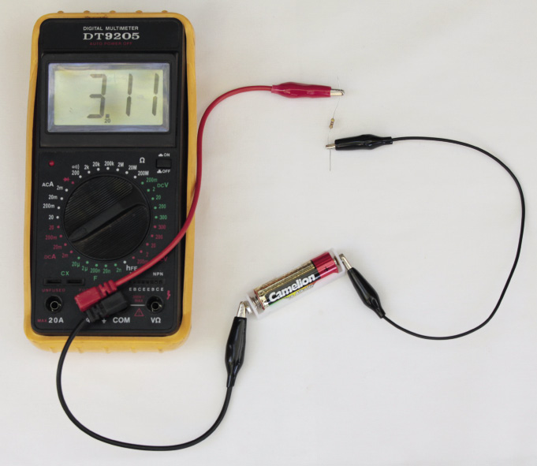
Figuur 18: Multimeter gestel en gekoppel om stroombaanspanning te meet
Meet stroom
Kyk na die diagram van die multimeter hieronder en identifiseer die deel wat gemerk is met "DCA".
- • Koppel die rooi toets leidraad aan die "V mA"-terminaal en die swart toets leidraad aan die "COM"-terminaal. Indien die stroom tussen 200 mA en 10 A gemeet moet word, koppel die rooi toets leidraad aan die, "10 A"-terminaal.
- • Stel die funksie na die "A" (ampere) area. Indien jy 'n onbekende stroom meet, begin by die hoogste omvang en verstel dan stelselmatig tot jy 'n akkurate lesing kry.
- • Koppel die ander punte van die toets leidrade in serie met die deel van die stroombaan waar die stroom gemeet moet word. (Ontkoppel die stroombaan en koppel die meter in serie)
- • Lees die stroom waarde van die skerm af.
Aksienavorsing
Jy benodig die volgende vir hierdie aktiwiteit:
- • drie penligselle (AA) in houers,
- • 'n 500 ohm resistor, met die kleurbande presiessoos in figuur 19, en
-
• twee
multimeters, of 'n ammeter en 'n voltmeter.

Figuur 19: A 500 ohm resistor
Stel 'n stroombaan op soos wat in figuur 20 hieronder gewys word deur 'n sel, resistor en ammeter te gebruik. Indien jy 'n multimeter gebruik in stede van 'n ammeter, stel dit op die ampere skaal.
In die volgende hoofstuk gaan jy leer hoe die kleurbande op ‘n resistor die weerstand (ohms) vir jou aandui.

Figuur 20: Stroombaan met een sel, resistor en ammeter.
Koppel nou 'n voltmeter oor die resistor, soos gewys in figuur 21. Indien jy 'n multimeter in plaas van 'n voltmeter gebruik, stel dit op die volt skaal.
'n Ammeter is altyd in serie verbind aan die deel van die stroombaan waarvan jy die stroom wil meet, sodat dit die volle stroom deur daardie deel van die stroombaan kan meet. Dit het baie min weerstand sodat dit nie die stroom van die stroombaan kan verander nie.
 Figuur 21: Stroombaan met een sel,
resistor, ammeter envoltmeter oor 'n resistor
Figuur 21: Stroombaan met een sel,
resistor, ammeter envoltmeter oor 'n resistor
'n Voltmeter is altyd in parallel gekoppel met die deel van die stroombaan waarvoor dit die potensiële verskil tussen twee punte moet meet.
Daar vloei baie min stroom deur ‘n voltmeter aangesien dit ‘n baie hoë weerstand het.
1. Skryf die lesing neer:
Koppel nou 'n tweede sel in serie soos in die diagram hieronder:
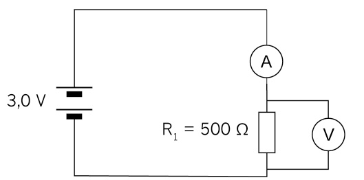
Figuur 22: Stroombaan met twee selle in serie, resistor, ammeter en voltmeter oor 'n resistor
2. Skryf die lesing neer:
Koppel nou die derde sel in serie soos gewys in figuur 23.

Figuur 23
3. Skryf die lesing neer:
4. Vul nou jou lesings in die tabel hieronder in:
|
|
Met een sel |
Met twee selle |
Met drie selle |
|
Stroomspanning |
1,5 V |
3,0 V |
4,5 V |
|
Stroom |
3,0 mA |
6,0 mA |
9,0 mA |
5. Vul nou die lesing op die grafiek-papier hieronder in.
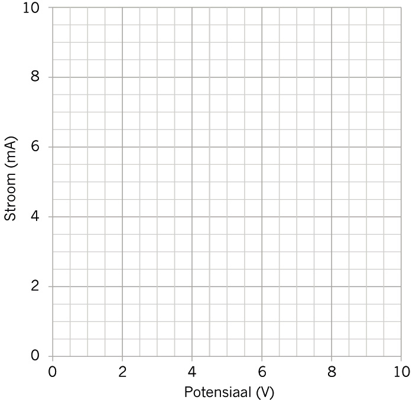
Figuur 24: 'n Grafiek van die verhouding tussen potensiële verskil en stroom
6. Beskryf die verhouding tussen die stroombaanspanning en stroom vir 'n 500 Ω resistor.
- • Het jy opgelet dat soos wat die stroombaanspanning verhoog, die stroom ook verhoog?
- • Is jou grafiek 'n reguit lyn?
- •

Volgende week
Volgende week, gaan jy verskillende tipes resistors ondersoek wat in stroombane gebruik word. Jy gaan ook oefen om die berekeninge te doen deur gebruik te maak van Ohm se wet.
In hierdie hoofstuk gaan jy leer om resistors in 'n elektriesestroombaan te gebruik om sodoende stroom te beheer. Jy gaan ontdek dat daar verskillende tipe resistors is wat vir verskillende funksies gebruik word. Jy gaan ook leer om weerstand op die resistor te lees. Jy gaan leer oor Ohm se Wet wat betrekking het op die hoeveelhede stroomspanning, stroom en weerstand, en jy gaan formules gebruik om berekeninge te doen om die waardes van stroomspanning, stroom en weerstand te vind.
2.1 Resistors en hulle identifikasie-kodes 21
2.2 Ohm se Wet 24
2.3 Doen berekeninge deur Ohm se Wet te gebruik 26
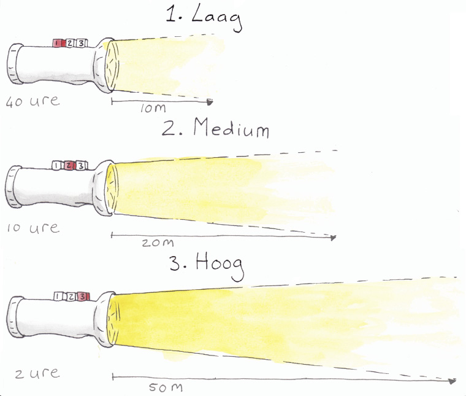
Figuur 1: Jy kan die helderheid van die lig op sommige flitse verander. Hoe skerper die lig wat jy kies, hoe vinniger sal die battery pap word.
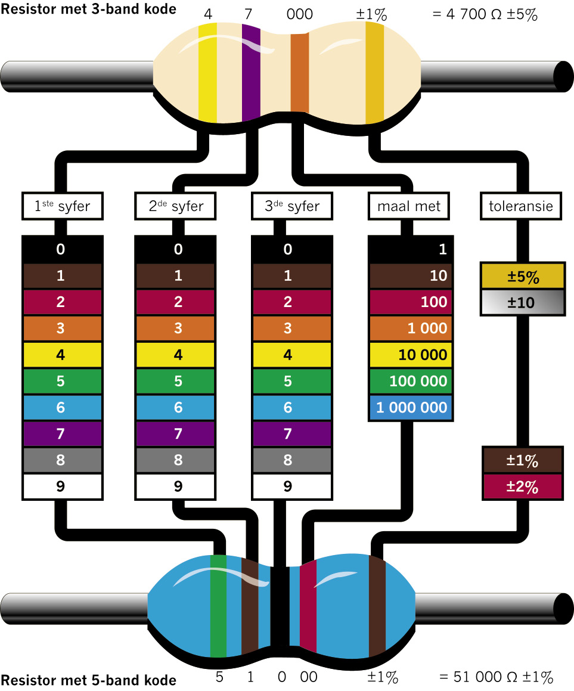
Figuur 2: Hoe om die kleurbande op 'n resistor te lees en te bepaal wat die weerstand is. (Jy gaan slegs met 'n resistor werk wat vier kleurbande het, soos die een hierbo).
2.1 Resistors
Wat is weerstand?
Elektrisiteit gelei makliker deur 'n koperdraad as deur 'n plastiekdraad, tou of gras. Koperdraad het 'n lae weerstand tot die geleiding van elektrisiteit, terwyl plastiekdraad 'n hoë weerstand het. Aangesien elektrisiteit maklik deur koper vloei, is koper 'n goeie geleier van elektrisiteit.
Om iets te weerstaan beteken om dit te probeer voorkom. Veronderstel jy sit in 'n boom en die wind waai baie sterk, jy weerstand bied om te keer dat jy uit die boom val deur aan die takke vas te hou.
Om iets te gelei beteken om toe te laat dat iets deurkom.
Die weerstand wat 'n voorwerp (byvoorbeeld, 'n stuk draad) teen die vloei van elektrisiteit bied, kan gemeet word.
- •
Wanneer elektrisiteit deur 'n geleier vloei, word hitte opgewek. Sommige metale soos chroom en nikkel, weerstaan die vloei van elektrisiteit redelik goed. Hierdie metale word dan warm wanneer elektrisiteit deur hulle vloei. Die verwarmingselement van stowe en ketels word normaalweg vervaardig uit 'n mengsel van nikkel en chroom. Wanneer sommige metale uiters warm word, sal hulle lig uitstraal.
Wanneer iets lig uitstraal is dit 'n bron van lig. 'n Gloeilamp is 'n bron van lig, maar 'n spieël nie, omdat dit slegs die lig reflekteer.
Indien die weerstand van 'n stroombaan baie laag is, byvoorbeeld wanneer die terminale van die selle aan 'n dik koperdraad gekoppel is, sal die stroom baie sterk vloei. Dit word 'n "kortsluiting" genoem. Dit kan veroorsaak dat so baie hitte opgewek word dat die selle en ander dele van die stroombaan beskadig word. Die geleierdrade kan smelt en daar kan selfs 'n brand ontstaan.
Deur meer weerstand by die stroombaan te voeg, kan help om die sterkte van die stroom deur die stroombaan te beheer. So beskerm jy die komponente in 'n stroombaan teen 'n te sterk stroom wat deur hulle vloei. Deur die weerstand te verhoog beteken ook dat die sel of battery wat krag aan die stroombaan verskaf, langer sal hou. Jy kan presiese hoeveelhede weerstand by die stroombaan voeg deur gebruik te maak van resistors met die vereiste weerstandswaarde.

Wat is 'n resistor?
'n Resistor is 'n spesiaal-ontwerpte komponent wat gewoonlik in 'n stroombaan gebruik word om stroom te beperk. Resistors word van materiale gemaak wat 'n hoë weerstand teen die vloei van elektrisiteit het, en is gewoonlik dun drade of velle. Resistors het ook presiese weerstandswaardes wat nie veel verander in verskillende omgewingstoestande nie.
Die mees algemene resistors wat gebruik word, lyk soos buise met twee drade wat aan die stroombaan verbind is. Die simbool wat gebruik word om aan te dui waar die resistor in die stroombaandiagram is, is 'n oop driehoek of 'n sigsaglyn.
Figuur 3: Tipiese resistors Figuur 4: Stroombaansimbole vir resistors
Die weerstandswaarde van lae-waarde resistors word normaalweg op hulle gedruk, terwyl die hoë-waarde resistors met kodes werk deur van kleurbande gebruik te maak. Die eerste drie bande gee die waarde van die resistor in ohm. Die kleurkodekaart op die tweede bladsy van hierdie hoofstuk sal jou help om die weerstandswaarde in ohm uit te werk.
Die vierde band op 'n resistor dui die akkuraatheid skatting as 'n persentasie aan. Dit word ook "toleransie" genoem. Die band is goud of silwer, afhangende van sy toleransie. Vir die stroombane wat jy gaan bou, is dit nie belangrik nie.
Resistors is die algemeenste komponente wat in elektronika gebruik word, aangesien hulle baie geskik is om die stroomsterkte te beheer. In die volgende weke sal jy uitvind hoe hulle gebruik word.
Eenhede van meting: ohms, kilo-ohm and mega-ohm
- •
- • 1 kΩ = 1 000 Ω = 103 Ω
- • 1 MΩ = 1 000 kΩ = 1 000 000 Ω = 106 Ω
Kilo beteken om met ‘n duisend te vermenigvuldig, byvoorbeeld1 km = 1 000 \times 1 m.
Mega beteken om met ‘n miljoen te vermenigvuldig.
1. Werk die weerstand van elk van die resistors uit en skryf dit neer:
(a) (b)

Figuur 5 Figuur 6
700 Ω 1 700 kΩ
(c) (d)
Figuur 7 Figuur 8
7,5 kΩ 4 300 MΩ
2. Vul die kleurkodes op hierdie ongekleurde resistors in om sodoende die gegewe weerstand aan te dui. Jy kan ook die kleur van elke band bokant die band neerskryf indien jy nie kleurpotlode of -penne het nie.
(a) 200 kΩ (b) 300 Ω

Figuur 9 Figuur 10
3. Verduidelik die doel van 'n resistor as 'n komponent in 'n elektriese stroombaan.

2.2 Ohm se Wet
In enige stroombaan is daar 'n spesiale verwantskap tussen die stroombaanspanning, stroom en die weerstand. Jy kan enige een van hierdie veranderlikes beheer deur die ander twee veranderlikes te verander.
Ohm se Wet stel dat: soos die stroombaanspanning verhoog, sal die stroom ook verhoog indien die weerstand konstant bly.
'n Veranderlike is 'n hoeveelheid wat verskillende waardes kan hê, byvoorbeeld die hoeveelheid water in 'n tenk. 'n Konstante is 'n hoeveelheid wat altyd dieselfde waarde het, byvoorbeeld gravitasie-versnelling. Soms noem ons 'n hoeveelheid 'n konstante omdat ons besluit om dit konstant te hou.
- •
- • is V die potensiaal of stroombaanspanningverskil wat in volt gemeet word,
- • I die stroom wat in ampere gemeet word, en
- • R die weerstand wat in ohm gemeet word.
Figuur 11 dui die verwantskap in 'n formuledriehoek aan.
Wanneer die stroombaanspanning en die stroom bekend is, kan die weerstand so bereken word:
R =
V
I
.
Wanneer die weerstand en stroom bekend is, kan die stroombaanspanning so bereken word:
Figuur 11
V = I \times R.
Wanneer die weerstand en stroombaanspanning bekend is, kan die stroom so bereken word:
I =
V
R
.
Vrae
Kyk na die volgende stroombaan:

Figuur 12
1. Wat, volgens Ohm se Wet, sal in 'n stroombaan verander wanneer die weerstand konstant gehou word, maar die aantal selle in serie vermeerder word?
2. Hoe sal die stroom verander indien die stroombaanspanning, wat deur die battery of selle verskaf word, konstant gehou word, maar die resistor vervang word met 'n ander resistor wat 'n laer weerstand het?
3. Hoe sal jy die verwantskap tussen die stroom en die stroombaanspanning in 'n stroombaan beskryf?
4. Hoe sal jy die verwantskap tussen die stroom en die weerstand in 'n stroombaan beskryf?
5. Watter van hierdie veranderinge sal veroorsaak dat die stroom wat deur 'n elektriese stroombaan vloei, verminder? Skryf die letters van die korrekte stellings neer.
(a) 'n vermindering in stroombaanspanning
(b) 'n vermindering in weerstand
(c) 'n verhoging in stroombaanspanning
(d) 'n verhoging in weerstand
6. 'n Elektriese stroombaan het drie 1,5 V selle wat in serie gekoppel is. Wat sal veroorsaak dat die lamp flouer skyn? Skryf die letters van die korrekte stellings neer.
(a) 'n verhoging in die stroombaanspanning van die battery (voeg nog 'n sel by)
(b) 'n verlaging in die stroombaanspanning van die battery (neem 'n sel weg)
(c) 'n vermindering in die weerstand van die resistor
(d) 'n verhoging in die weerstand van die resistor
 2.3 Doen berekeninge deur Ohm
se Wet te gebruik
2.3 Doen berekeninge deur Ohm
se Wet te gebruik
Verlede week het julle geleer hoe Ohm se Wet gebruik kan word om te voorspel wat gebeur wanneer jy een of twee van die volgende veranderlikes verander: stroom, stroombaanspanning en weerstand. Jy gaan nou die formules vir Ohm se Wet gebruik om voorspellings te maak. Onthou om die korrekte eenhede in die formules te gebruik!
Voorbeeld 1
Bereken die waarde van die weerstand in die diagram hieronder, waar die stroombaanspanning oor die resistor 12 V is en die stroom deur die resistor 2 A is.
R =
V
I
=
12 V
2 A
= 6 Ω
Figuur 13
Voorbeeld 2
Bereken die waarde van die stroombaanspanning in die stroombaan hieronder, waar die resistor 'n waarde van 4 Ω het en die stroom deur die resistor 2,5 A is.
V = I \times R
= 2,5 A \times 4 Ω
= 10 V

Figuur 14

Voorbeeld 3
Bereken die waarde van die stroom in die stroombaan hieronder, waar die resistor 'n waarde van 3 Ω het en die stroombaanspanning oor die resistor 12 V is.
I =
V
R
=
12 V
3 Ω
= 4 A

Figuur 15
Vrae
1. Wat sal die potensiële verskil wees wanneer die stroom in 'n stroombaan 10 A is en die totale weerstand 1 000 Ω is?
2. Gegewe V = 10 V en R = 1 kΩ, wat sal die waarde van die stroom in die stroombaan wees?
V = I \times R, dus I = V \div R = (10 V) \div (1 000 Ω) = 0,010 A
3. Gegewe V = 20 V en R = 5 kΩ, bereken die waarde van die stroom.
V = I \times R, dus I = V \div R = (20 V) \div (5 000 Ω) = 0,004 A
4. 'n Tuimeldroër in 'n wassery gebruik 'n 220 V kragbron. Die metaaldraad van die verwarmingselement verskaf 'n gemiddelde weerstand van 12 Ω. Wat is die waarde van die stroom deur die verwarmingselement?
V = I \times R, dus I = V \div R = (220 V) \div (12 Ω) = 18,3 A
5. 'n 9 V-battery hou 'n stroom van 3 A deur 'n radio. Wat is die weerstand in die stroombaan?
V = I \times R, dus R = V \div I = (9 V) \div (3 A) = 3 Ω
6. Indien die stroombaanspanning oor 'n stroombaan vier maal verhoog word, wat dink jy sal met die stroom deur die stroombaan gebeur?
7. (a) Bereken die waarde van die resistor in die stroombaan hieronder.
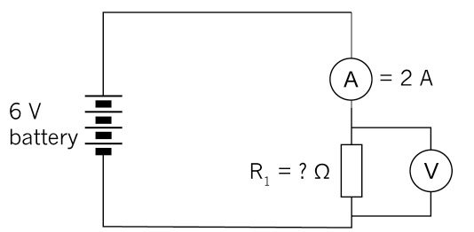 Figuur 16
(b) Indien twee of meer selle by die stroombaan gevoeg word, sal die stroom vermeerder of verminder? Kontroleer jou voorspelling deur die formule te gebruik.
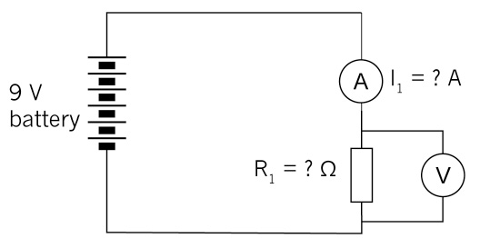Figuur 17
8. Bereken die stroombaanspanning vir die stroombaan hieronder:
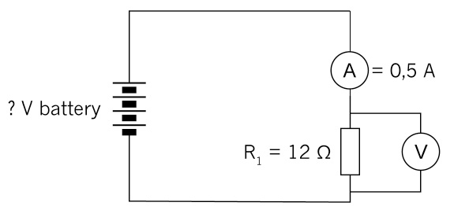
Figure 18
9. Bestudeer die stroombaan hieronder:
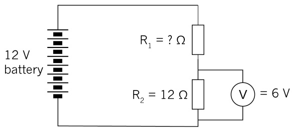
Figure 19
(a) Bereken die stroom deur R2.
V = I \times R, so I = V \div R = (6 V ) \div (12 Ω) = 0,5 A
(b) Wat sal die stroom deur R1 wees?
0,5 A; serie stroombaan dus is die stroom by alle punte dieselfde.
(c) Wat is die stroombaanspanning oor R1?
V = 12 V – 6 V = 6 V
(d) Wat is die weerstandswaarde van R1?
12 Ω; het dieselfde stroombaanspanning as R.

Volgende week
In die volgende hoofstuk gaan jy leer van komponente wat algemeen in elektroniese stelsels gebruik word en ook leer van hierdie komponente se spesiale funksies.
In hierdie hoofstuk gaan jy leer oor elektroniese stelsels en oor komponente in elektroniese stroombane. Jy gaan ook leer van die volgende beheertoestelle: skakelaars, diodes en transistors. Laastens gaan jy 'n eenvoudige transistorstroombaan maak. 'n Elektriese stroombaan bestaan uit 'n energiebron en geleiers. Geleiers koppel komponente soos inset-, uitset- en prosesseringstoestelle aanmekaar om 'n baan vir die elektrone te skep om van en na die energiebron te vloei. Isolators word gebruik om komponente teen kortsluiting te beskerm.
3.1 Skakelaars 32
3.2 Diodes 38
3.3 Transistors 41

Figuur 1: 'n Paar voorbeelde van elektroniese komponente waarna ons in hierdie hoofstuk gaan kyk.
3.1 Skakelaars
'n Skakelaar beheer die elektriese stroom deur die stroombaan oop of toe te maak. Daar is verskeie tipes skakelaars wat die stroombaan op verskillende maniere kan beheer. In hierdie les gaan jy van skakelaars leer wat die gebruiker met die hand kan aan en af skakel.
1. Dink na oor die verskillende tipes skakelaars wat jy op 'n daaglikse basis gebruik en skryf hulle hier neer:
Drukknoppieskakelaar
Drukknoppieskakelaars word dikwels gebruik in deurklokkie stroombane, soos in figuur 2. Hierdie eenvoudige deurklokkie stroombaan bestaan uit selle wat in serie gekoppel is, 'n drukknoppie en 'n gonser. Al hierdie komponente word deur 'n geleidingsdraad verbind. 'n Persoon wat die huis besoek, sal die knoppie vir 'n kort rukkie druk en dit dan laat los.

Figuur 2: 'n Eenvoudige deurknoppiestroombaan
2. Teken die stroombaandiagram van die deurknoppie stroombaan wat in die foto gewys word. Gebruik die korrekte stroombaandiagram simbole. Let op dat die selle in serie gekoppel is.
3. Verduidelik in jou eie woorde hoe hierdie stroombaan werk.
Enkelpool-enkelslagskakelaar (EPES)
Skakelaars word benoem deur woorde soos "pool" en "slag" te gebruik. Pole verwys na die aantal stroombane in die skakelaarkontroles, en die slag verwys na hoeveel kontakte die skakelaar kan maak.
Enkelpool-enkelslagskakelaars (EPES) beheer een insetstroombaan en maak kontak met die uitsetstroombaan.
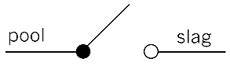
Figuur 3: Die simbool vir 'n EPES-skakelaar
'n Voorbeeld van 'n EPES-skakelaar is 'n ligskakelaar. Hieronder is 'n tipiese ligskakelaarstroombaan.
Wanneer die skakelaar geslote is, sal die stroom van die positiewe terminaal (+) van die battery deur die skakelaar, deur die lamp en terug na die negatiewe (–) terminaal van die battery vloei.

Figuur 4: 'n Tipiese ligskakelaarstroombaan met 'n energiebron, skakelaar en 'n lamp
Enkelpool-dubbelslagskakelaar (EPDS)
Enkelpool-dubbelslagskakelaars beheer een stroombaan, maar hulle kan twee kontakte maak sodat hulle twee toestelle kan beheer. Hulle sal toestel 1 in een posisie aanskakel en toestel 2 in 'n ander posisie aanskakel. Daar is gee "af"-posisie vir hierdie skakelaar nie.
Figuur 5: Die simbool vir 'n EPDS-skakelaar
'n Voorbeeld van 'n EPDS-skakelaar is 'n skakelaar wat 'n rooi gloeilamp in een posisie aanskakel en 'n groen gloeilamp in 'n ander posisie aanskakel.
Die stroombaandiagram hieronder wys 'n twee-rigting beligtingstroombaan.
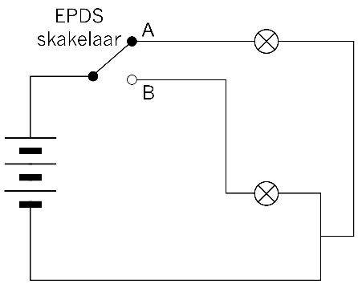
Figuur 6: 'n Stroombaan met 'n battery, twee gloeilampe, en 'n EPDS-skakelaar wat twee uitsette beheer
4. Verduidelik in jou eie woorde hoe hierdie stroombane werk.
5. Dink na oor hoe jy 'n EPDS-skakelaar kan gebruik. Jy kan selfs 'n denkbeeldige voorbeeld opmaak, solank as wat dit sin maak.
6. Kyk weer na figuur 6. 'n EPDS-skakelaar beheer twee moontlike uitsette. Hulle kan nie albei AAN wees nie, en hulle kan ook nie albei AF wees nie. Is hierdie 'n voorbeeld van OF-logika of EN-logika? Verduidelik jou antwoord.
7. Kyk na die stroombaandiagram hieronder. Dit wys hoe een lig beheer kan word deur twee verskillende skakelaars.
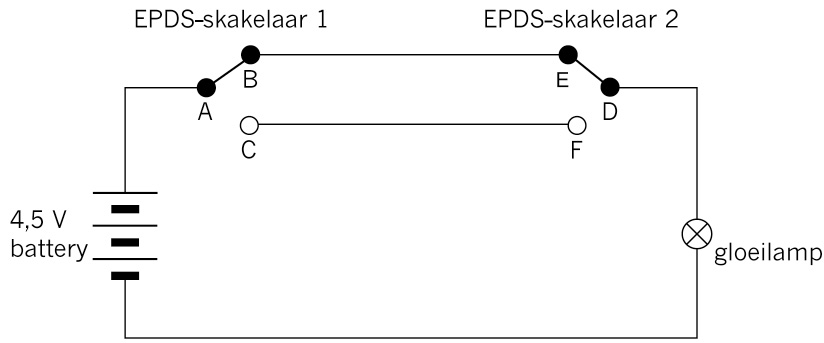
Figuur 7: 'n Stroombaan met twee EPDS-skakelaars wat gereeld gebruik word om 'n gloeilamp te beheer. Hierdie skakelaars is gewoonlik aan albei punte van 'n lang gang. Dit word ook gebruik om 'n lamp met een skakelaar van onder en van bo 'n stel trappe aan en af te skakel.
(a) Sal die gloeilamp aanskakel indien A gekoppel is aan C en D gekoppel is aan F?
ja
(b) Sal die gloeilamp aanskakel indien A gekoppel is aan C en D gekoppel is aan E?
nee
(c) Sal die gloeilamp aanskakel indien AB en ED geslote is?
ja
(d) Sal die gloeilamp aanskakel indien DF en AB geslote is?
nee
(e) Verduidelik waarom hierdie tipe stroombaan in figuur 7 geskik is om die gloeilamp in 'n lang gang te beheer.
Dubbelpool-dubbelslagskakelaar (DPDS)
'n Dubbelpool-dubbelslagskakelaar (DPDS) is soos twee SPDS-skakelaars met hul skakelaarhefbome aan mekaar gekoppel. Daar is twee insetstroombane, en vir elke insetstroombaan is daar twee moontlike uitsetstroombane.
In die simbool hieronder, dui die stippellyn dat die skakelaars gelyktydig werk.
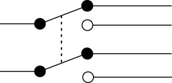
Figure 8
Stel jou voor 'n outomatiese motorhek wat deur 'n elektriese motor beheer word. Om die hek oop te maak, moet die motor in een rigting draai. Om die hek weer toe te maak, moet die motor in die teenoorgestelde rigting draai. Hoe kan die rigting waarin die motor draai verander word? Om dit te kan doen moet die rigting van die stroom deur die elektriese motor verander word. Dubbelpool-dubbelslagskakelaars kan gebruik word om die rigting van die stroom deur die stroombaan om te keer. Hulle is dus baie geskik vir toestelle soos outomatiese motorhekke. Die stroomdiagram hieronder wys hoe 'n DPDS-skakelaars die rigting van die stroom deur die elektriese motor kan verander.
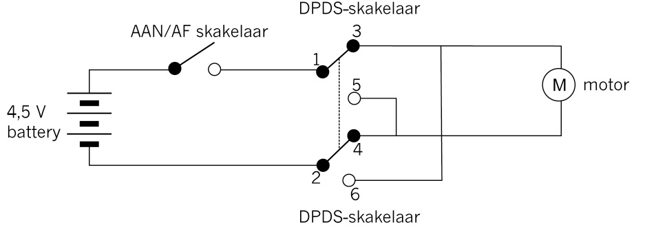
Figuur 9: 'n Stroombaan waar 'n DPDS-skakelaar die rigting van die stroom deur 'n elektriese motor beheer.
Die dryfas sal in een rigting draai wanneer die stroom daardeur vloei vanaf terminaal M1 na M2, maar die dryfas sal in die teenoorgestelde rigting draai wanneer die stroom vanaf M2 na M1 daardeur vloei.
Wanneer die AAN/AF skakelaar AANGESKAKEL is en die DPDS-skakelaar in die posisie is soos wat die diagram hierbo aandui, sal die stroom van die negatiewe pool van die battery, deur die AAN/AF skakelaar vloei na 1 tot 3, dan deur die motor van M1 tot M2 tot 4 en tot by 2, en dan weer terug na die negatiewe pool van die battery.
Wanneer die DPDS-skakelaar na die ander posisie as wat in figuur 9 gewys word, geskuif word, sal die stroom op die volgende wyse vloei:
- • van die positiewe terminaal van die battery,
- • deur die AAN/AF skakelaar na 1,
- • deur die boonste deel van die DPDS-skakelaar van 1 tot 5,
- • deur die boonste deel van die DPDS-skakelaar van 1 tot 5,
- • tot 6,
- • deur die onderste deel van die DPDS vanaf 6 tot 2, en
- • tot by die negatiewe terminaal van die battery.
8. Verduidelik in jou eie woorde hoe hierdie stroombaan werk.
9. Verduidelik die verskil tussen 'n EPDS- en 'n DPDS-skakelaar.
3.2 Diodes
'n Diode is 'n komponent met twee terminale wat in 'n stroombaan gekoppel kan word. Die funksie van 'n diode in 'n stroombaan is om 'n elektriese stroom toe te laat om vorentoe te vloei en terselfdertyd stroom te keer wat in die teenoorgestelde rigting vloei.
Indien die anode aan 'n hoër stroombaanspanning as die katode gekoppel is, sal die stroom van die anode na die katode vloei. Dit word "voorwaartse vooroordeel" genoem.
Indien die diode agterstevoor om in die stroombaan geplaas word, sodat die stroombaanspanning van die katode hoër is as die stroombaanspanning van die anode, sal die diode nie toelaat dat elektrisiteit gelei word nie. Dit word "terugwaartse vooroordeel" genoem.
Diodes word normaalweg gebruik om skade aan ander komponente in die stroombaan te voorkom. Sommige komponente het positiewe en negatiewe terminale en kan beskadig word indien 'n stroom in die verkeerde rigting deur hulle vloei. 'n Diode beskerm teen elektriese stroom wat in die verkeerde rigting vloei indien 'n battery verkeerd om ingeplaas word om krag aan 'n komponent te gee. Indien jy die batterye van 'n radio verkeerd om insit, sal 'n diode skade aan die radio voorkom deur die stroom nie te laat vloei nie.

Figuur 10: 'n Diode
Diodes verskil aansienlik in grootte, stroomdraende kapasiteit, en terugwaartse stroombaanspanning blokkering. Hulle varieer van klein diodes wat slegs 20 mA met 30 V stroombaanspanning blokkering kan hanteer, tot groot, industriële diodes wat honderde ampere kan dra en duisende volt kan blokkeer. Jy kan 'n multimeter of 'n eenvoudige toetser (battery, resistor en LED) gebruik om te toets in watter rigting die diode gelei.
Figuur 11: Stroombaan simbool van 'n diode. Die stroomvloeirigting in 'n diode word deur die pyl aangedui.
Lig-emissiediodes (LED)
'n Lig-emissiediode (LED) is 'n spesiale tipe diode wat gloei wanneer elektrisiteit daardeur vloei. Die LED kan lig van spesifieke kleur voortbring, afhangende van die materiale waarvan hulle gemaak word. Hulle kan rooi, amber, geel, groen, blou, violet en wit voortbring. Die mees algemene kleur is rooi.
LEDs word meestal gebruik om aan te dui of 'n stroombaan werk. Dink na oor die klein rooi liggie wat aan die voorkant van die televisie gloei en soms verander van rooi na amber.
LEDs word as aanwysers in baie toestelle, insluitende sakrekenaar skerms en digitale horlosies, gebruik.
Die LED laat die stroom toe om in slegs een rigting te vloei. Die katode word normaalweg aangedui deur 'n plat kant op die omhulsel en die anode word normaal aangedui deur 'n effens langer been. Die stroom wat nodig is om die LED te laat werk, is min of meer 20 mA.

Figuur 12: 'n LED. Die langer draad van die twee drade wat uit die LED kom moet aan die positiewe terminaal gekoppel wees en die korter draad aan die negatiewe terminaal.
Die pylsimbool vir 'n LED dui die rigting aan waarin die stroom vloei.
Deesdae word LEDs gebruik in baie gevalle waar normale gloeilampe in die verlede gebruik is. Byvoorbeeld, huishoudelike gloeilampe word vervang met LED gloeilampe. Die LED gloeilampe word gebruik omdat dit meer effektief is en ook baie minder elektrisiteit gebruik. Hulle hou ook vir 'n baie langer tyd.
Figuur 13: Die stroombaan simbool vir 'n LED.
'n Resistor word by die stroombaan gevoeg om die LED van te veel stroom te beskerm, soos in die diagram hieronder gewys word.

Figuur 14: 'n LED stroombaan met 'n stroom-beperkende resistor.
Vrae
1. Beskryf die funksie van 'n diode in jou eie woorde.
2. Lys ten minste vier plekke waar LEDs gebruik word. Moenie voorbeelde herhaal wat reeds genoem is nie.
3. Hoe kan jy seker maak dat 'n diode in die regte rigting in 'n stroombaan geplaas word?
4. Teken die stroombaansimbole vir 'n diode en vir 'n LED hier:
 3.3 Transistors
3.3 Transistors
Transistors is baie belangrike boustene van moderne elektroniese toestelle. Hulle stel ons in staat om kleiner en goedkoper elektroniese toestelle te ontwerp.
'n Transistor is 'n semi-geleier toestel wat bestaan uit drie lae. Elke laag het sy eie koppelpunt met 'n spesifieke naam: kollektor, basis en emittor.
Figuur 15: Een tipe transistor

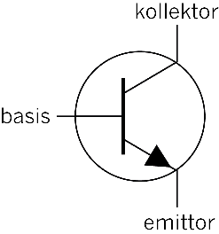
Figuur 16: Die stroombaansimbool vir 'n npn transistor.
'n Transistor werk soos 'n tipe skakelaar wat die stroom aan- en af skakel. Dit kan 'n stroom ook versterk.
'n Npn-transistor tree op asof daar 'n skakelaar tussen die kollektor en die emittor is; en 'n positiewe potensiaal op die basis van die transistor as die skakelaar geslote. Dit is dus 'n elektries-beheerde skakelaar.
Daar is ander tipe transistors, byvoorbeeld, pnp transistors wat effens anders werk as die npn transistors. Jy gaan in hierdie kwartaal slegs met npn transistors werk.
Transistor is kort vir die woord "trans-resistor" en dit verduidelik basies hoe dit werk. Met 'n relatiewe klein basisstroom, word die weerstand tussen die kollektor en die emittor verander. Soos die basisstroom verhoog, sal die kollektor-emittor weerstand verminder.
In hoofstuk 5 gaan jy oor die toepassing van transistors leer.
‘n Transistor-stroombaan
Veronderstel jy wil 'n skakelaar maak wat EN of geslote is wanneer jy met jou vinger aan die twee terminale raak, en OF of oop wanneer jy nie aan hulle raak nie. Kyk na die stroombaandiagram in figuur 17 vir 'n aanraakskakelaar soos die een wat beskryf is. Die doel van hierdie stroombaan is om die LED te laat skyn wanneer jy met jou vinger aan die aanraakskakelaar raak.
Figuur 17: 'n Eenvoudige stroombaan vir 'n aanraakskakelaar. Hierdie stroombaan sal nie goed werk nie.
Ongelukkig gaan hierdie stroombaan nie baie goed werk nie aangesien jou vinger 'n baie swak geleier is. Met ander woorde, jou vinger het 'n baie hoë weerstandswaarde. Die stroom gaan dus baie klein wees wanneer jy die skakelaar aanraak. Die LED gaan slegs 'n baie flou liggie uitstraal.
Deur van 'n transistor gebruik te maak, kan jy 'n stroombaan bou wat die swak stroom van jou vinger op die skakelaar gebruik om 'n groter stroom wat deur die LED vloei, aan te skakel en dus 'n skerper lig laat uitstraal.
Figuur 18 wys 'n stroombaan wat 'n transistor vir hierdie doel gebruik. In hierdie stroombaan is die aanraakskakelaar die "insettoestel", npn-transistor is die "beheertoestel", en die LED is die "uitsettoestel".
'n Transistor gebruik 'n klein stroom stroombaan om 'n groter stroom stroombaan aan te skakel. Dit is waarom transistors in musiek- toerusting gebruik word om die klank te "versterk".
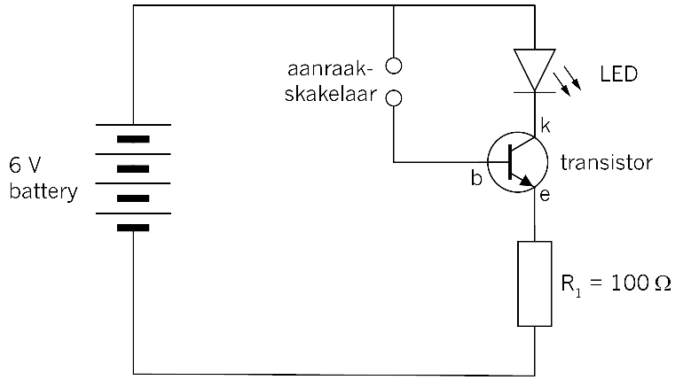
Figuur 18: 'n Stroombaan wat 'n transistor as 'n elektroniese skakelaar gebruik.
1. Die foto hieronder wys 'n stroombaan wat volgens die stroombaandiagram in figuur 18 gebou is. Kyk na die foto en identifiseer elke komponent in die stroombaan. Skryf byskrifte vir die verskillende komponente neer en teken 'n lyn met 'n pyl van die woord na die komponent op die foto.

Figuur 19: Die konstruksie van 'n aanraakskakelaarstroombaan met 'n transistor en 'n LED.
2. Verduidelik hoe die verskillende dele van die transistor in hierdie stroombaan gekoppel is.
3. Verduidelik wat jy verwag om te sien wanneer die aanraakskakelaar geaktiveer word.
4. Raak met een vinger aan die twee terminale van die aanraakskakelaar. Beskryf wat gebeur.

Volgende week
Volgende week, gaan jy meer leer oor elektroniese stelsels en komponente in elektroniese stroombane. Jy gaan ook leer van verskillende insettoestelle: sensors en kapasitors.
In hierdie hoofstuk gaan jy meer leer oor elektroniese stelsels en -komponente in elektroniese stroombane. Jy gaan oor verskeie tipes insettoestelle leer: sensors en kapasitors. 'n Aanraakskakelaar is 'n sensor wat met die vog op jou vel werk. Dit is 'n baie sensitiewe toestel wat 'n klein stroom voortbring. 'n Transistor is nodig om die stroom groot genoeg te maak om 'n effek te hê. Hierdie week gaan jy oor ander tipe sensors, en hoe hulle in toestelle gebruik word, leer.
4.1 Lig-afhanklike resistors (LAR) 47
4.2 Termistors 50
4.3 Kapasitors 53
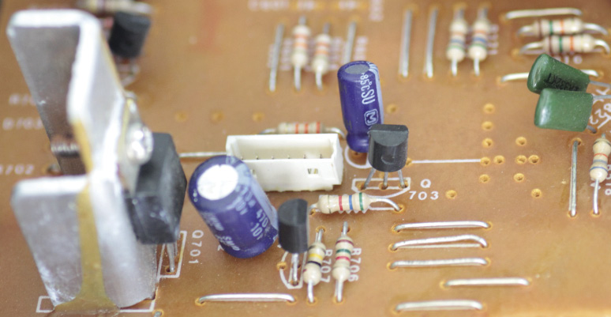
Figuur 1: Komponente gekoppel op 'n gedrukte stroombaanbord

Figuur 2: Meet die weerstand van 'n termistor by kamertemperatuur.
Figuur 3: Meet die weerstand van 'n termistor terwyl jy dit met 'n warm voorwerp verhit. Jy kan 'n metaal duimspyker verhit deur dit in 'n uitveër te druk en dit dan vir 'n minuut lank hard teen 'n stuk hout of plastiek te vryf. Veiligheidswaarskuwing: Die duimspyker kan baie warm word en jou vel brand; dit kan dan 'n wond kan veroorsaak.
4.1 Lig-afhanklike resistors
'n Lig-afhanklike resistor of LAR is 'n resistor waarvan die weerstand verlaag wanneer dit blootgestel word aan lig van 'n hoër intensiteit. Dit kan daarom gebruik word om lig op te spoor en om waarskuwingstoestelle te laat afgaan in gevalle waar lig dalk probleme kan veroorsaak.
- • Wanneer die LAR in die donker is, is die weerstandswaarde baie hoog: ongeveer 1 MΩ.
- • Wanneer die LAR aan lig met 'n hoë intensiteit blootgestel word, sal die weerstandswaarde verminder; dit kan daal van 1 MΩ tot 2 kΩ.
'n LAR het twee terminale wat in enige rigting aan 'n stroombaan gekoppel kan word.
|
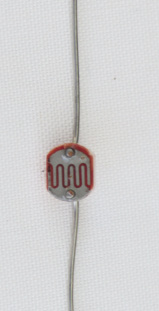 |
|
|
Figuur 4: 'n Lig-afhanklike resistor |
Figuur 5: Die stroombaandiagramsimbool vir 'nlig-afhanklike resistor |

Stroombaan van 'n dag/nag-skakelaar
Dag/nag-skakelaars word gereeld gebruik om straatligte en buiteligte aan te sit sodra dit donker word. Dit is meer voordelig as tydskakelaars, aangesien die tyd wat gestel word, verkeerd kan wees. Die aantal ure daglig bly ook nie konstant gedurende verskillende weerstoestande nie.
In hierdie voorbeeld is die lig-afhanklike resistor (LAR) die insettoestel, die npn- transistor die beheertoestel, en die LED is die uitsettoestel.
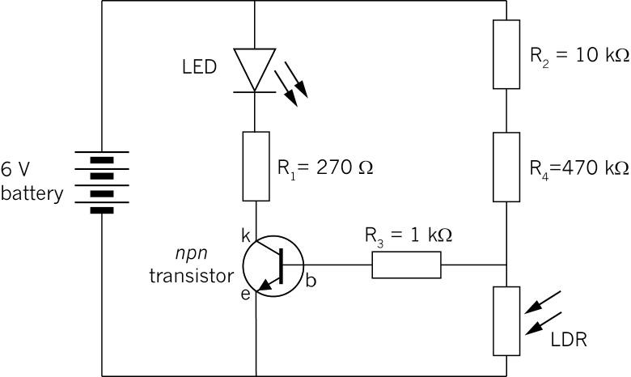
Figuur 6: Stroombaandiagram van 'n dag/nag-skakelaar
1. Skryf vier voorbeelde neer van wanneer dit geskik sal wees om 'n toestel te gebruik wat die hoeveelheid lig waarneem en daarop reageer.
2. Wat is die rol van die LAR in die stroombaan?
3. Beskryf hoe die transistor in die stroombaan gekoppel is.
4. Wat is die rol van die transistor in die stroombaan?
4.2 Termistors (temperatuur-sensitiewe resistors)
Die weerstandswaarde van hierdie resistor hang af van die temperatuur waaraan dit blootgestel word. Daar is twee tipe termistors:
- • 'n "Negatiewe-temperatuur koëffisiënt" tipe termistor, waar die weerstandswaarde verlaag met 'n verhoging in temperatuur. Dit word ook 'n "NTK" of 'n "-T" termistor genoem
- • "'n Positiewe-temperatuur koëffisiënt" tipe termistor, waar die weerstandswaarde verhoog met 'n verhoging in temperatuur. Dit word ook 'n "PTK" of 'n "+T" termistor genoem.
|
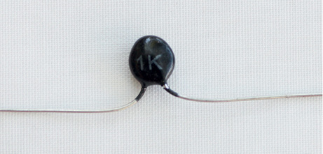 |
|
|
Figuur 7: 'n Termistor |
Figuur 8: Die stroombaandiagramsimbool vir 'n termistor |

1. Skryf vier voorbeelde neer van situasies waar elektroniese toestelle wat 'n termistor gebruik, baie geskik sou wees.
Meet die weerstand van 'n termistor
Die foto's op die tweede bladsy van hierdie hoofstuk wys die weerstand van 'n termistor wat gemeet word teen kamertemperatuur, en wanneer dit verhit word deur dit op 'n warm voorwerp te plaas. Teen kamertemperatuur is die weerstand 1 413 Ω. Wanneer die termistor verhit word met 'n voorwerp, verlaag die weerstand tot 888 Ω.
2. Was die termistor 'n PTK of 'n NTK?
3. Gee redes vir jou antwoord.
Hitte-geaktiveerde skakelaar
'n Termistor kan gebruik word in 'n hitte-beheerde skakelaar vir 'n brandalarm. Wanneer die termistor verhit word, word die weerstand verlaag en die transistor sal dan stroom gelei wat die LED aanskakel.
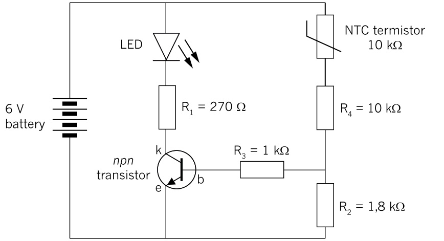Figuur 9: Diagram van 'n eenvoudige brandalarm met 'n NTK-termistor
4. Wat is die rol van die termistor in die stroombaan?
5. Beskryf hoe die transistor aan die stroombaan gekoppel is om die stroom te versterk.
6. Teken 'n eenvoudige stroombaandiagram vir 'n aanwyserlig om te wys wanneer die hitte onder 'n sekere temperatuur daal en wanneer hy weer begin verhit.
|
|
4.3 Kapasitors
Die hooffunksie van 'n kapasitor is om elektriese lading te stoor. 'n Kapasitor bestaan uit twee metaal plate wat geskei word deur 'n isolator wat 'n diëlektries genoem word. Die vermoë van die kapasitor om elektriese lading te stoor, word kapasitansie genoem.
Kapasitansie word in farad gemeet. Omdat die farad so 'n groot eenheid is, bevat die praktiese waardes gewoonlik die voorvoegsels m (milli-), µ (mikro-), n (nano-) of p (pico-).
|
|
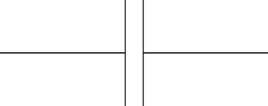 |
|
Figuur 10: Verskillende tipes kapasitors |
Figuur 11: Die stroombaandiagramsimbool vir 'n kapasitor |

Wanneer kapasitors in parallel gekoppel is, word die totale area van die metaal plate aan albei kante verhoog sodat die totale kapasitansie verhoog word.
Wanneer kapasitors in serie gekoppel is, word die afstand tussen die teenoorgestelde plate verhoog. Omdat die kapasitansie omgekeerd proporsioneel is aan die afstand tussen die plate, word die totale kapasitansie verlaag tot minder as die van die kleinste kapasitor.
Lading en ontlading van 'n kapasitor
Die lading en ontlading van 'n kapasitor kan waargeneem word deur die stroombaan in die diagram hieronder te bou. Wanneer die skakelaar in posisie A is, sal die stroom van die positiewe terminaal van die battery, deur LED1, deur die skakelaar na een plaat van die kapasitor vloei. Die negatiewe terminaal van die battery is aan die ander plaat van die kapasitor gekoppel deur die resistor R1. Terwyl die kapasitor laai, sal LED1 AAN wees.
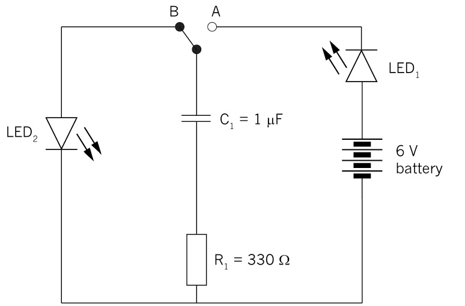Figuur 12: 'n Kapasitor lading en ontlading stroombaan
Nadat die kapasitor gelaai is en die skakelaar na die posisie B gedraai word, sal die stroom nou van die positiewe plaat van die kapasitor deur LED2 vloei en deur resistor R1 ontlaai. Terwyl die kapasitor ontlaai sal LED2 AAN wees.
Kapasitors word gereeld in elektroniese toestelle gebruik wat 'n behoorlik-beheerde tydvertraging benodig, soos tydklokkies en verkeersligte. Die presiese tipe kapasitor kan gekies word om die presiese tydvertraging te veroorsaak. Die verhoging van die waarde van die kapasitor verleng die tyd van die tydvertraging.
Vrae
1. Noem die komponent in die prent en teken die korrekte stroombaandiagramsimbool langs die komponent. Gee 'n kort beskrywing van die hoofgebruike van die komponent.
|
Naam van komponent |
Prent |
Simbool |
Gebruik |
|
LED |
|
|
Verseker dat die stroom in slegs een rigting vloei en verskaf lig vanaf elektriese energie. |
|
transistor |
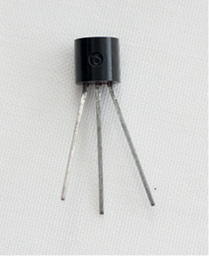 |
(npn tipe) |
Tree op as ʼn skakelaar ofversterker wat elektries beheer word. |
|
lig-afhanklike resistor (LDR) |
|
|
Verander van weerstandafhangende vandie intensiteit van die lig watgeabsorbeer word. |
|
kapasitor |
|
|
Stoor elektriese lading. |
|
termistor |
|
Verander van weerstandafhangende van die temperatuur. |
|
|
elektriesemotor |
|
Skakel elektriese energie om na afwisselendebeweging(kinetieseenergie). |


Volgende week
Volgende week gaan jy stroombaandiagramme teken en eenvoudige stroombane bou.
In hierdie hoofstuk gaan jy stroombaandiagramme teken en vier elektroniese stroombane bou deur gebruik te maak van die komponente waarvan jy in hoofstuk 3 en 4 geleer het.
5.1 Eenvoudige elektroniese stroombane 59
5.2 'n Beheerstroombaan en 'n tydvertragingstroombaan 61
5.3 Bou 'n brandalarmstroombaan 64


Figuur 1: 'n Deel van die stroombaan van 'n radio
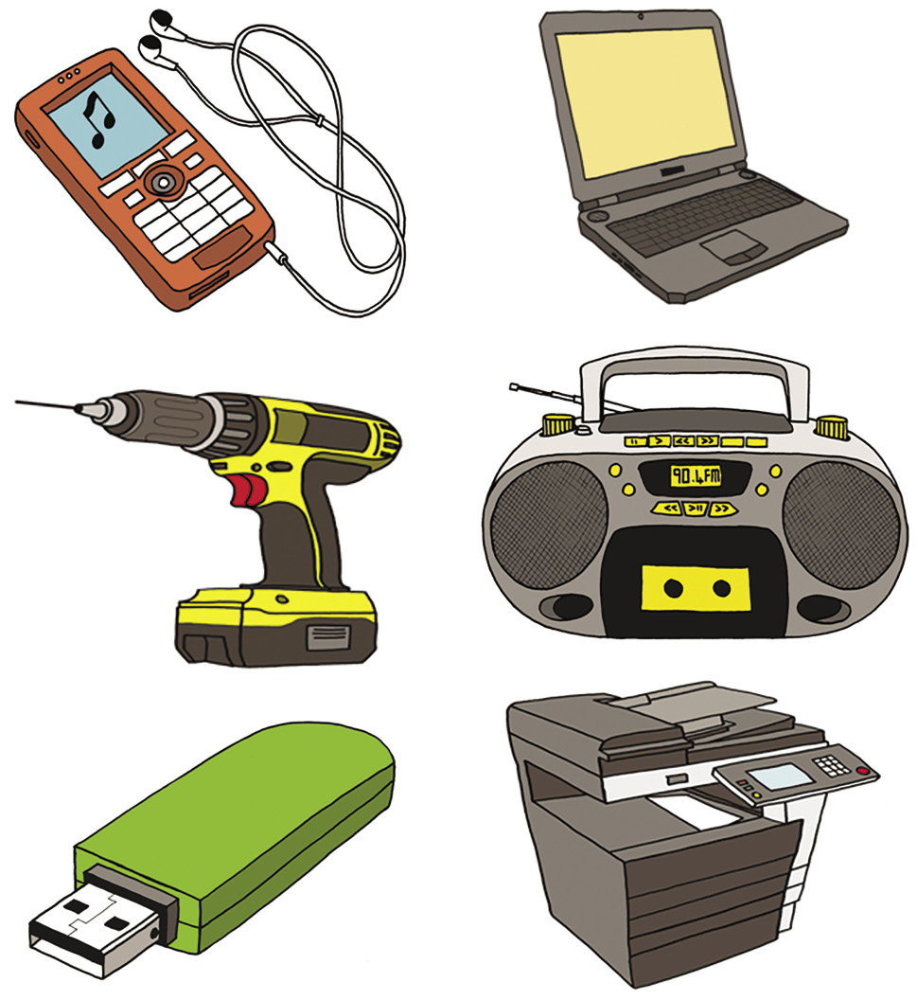
Figuur 2: Al hierdie toestelle bevat elektroniese stroombane
5.1 Eenvoudige elektroniese stroombane
‘n Stroombaan met ‘n LED
In hierdie les gaan jy 'n eenvoudige LED stroombaan bou. Jy gaan die stroombaandiagram op jou eie teken en julle gaan in pare werk om die stroombaan aanmekaar te sit.
Jy gaan die volgende benodig:
- • 'n LED,
- • 'n 470 Ω resistor,
- • 'n skakelaar,
- • vier 1,5 V selle in series, of 'n 9 V battery, en
- • elektriese geleidraad met kaaimansklemme vir die koppelings.
Die foto hieronder wys die stroombaan wat jy gaan bou.
1. Teken 'n stroombaandiagram van figuur 3.
|
|
Figuur 3: 'n Stroombaan met 'n LED, 'n battery, 'n skakelaar en 'n resistor.

‘n Stroombaan met ‘n lar
Jy gaan nou 'n stroombaan bou waar 'n LAR die stroom beheer.
Jy gaan die volgende benodig:
- • 'n LAR,
- • vier 1,5 V selle in 'n sel houer,en
- • 'n gonser.
Die foto hier regs wys 'nstroombaan waar 'n LAR diestroom deur die stroombaanbeheer.

1. Werk op jou eie en teken diestroombaandiagram vanfiguur 4 in die spasiehier regs.
2. Werk in pare om diestroombaan te bou.
3. Voorspel wat sal gebeur wanneer:
(a) Die LAR bedek is.
geluid maak.
(b) Die LAR in helder sonlig is.
|
|
Die gonser sal ʼn harde geluid maak.
4. Hoe word die gonser geaffekteer deurverskillende ligbronne, byvoorbeeld soos die lig van 'n elektriese lamp, lig van 'n selfoon skerm of lig van 'n flitslig? Doen 'n praktiese ondersoek en skryf jou bevindinge neer:

5.2 'n Beheerstroombaan en 'n tydvertragingstroombaan
'n Beheerstroombaan en 'n tydvertragingstroombaan
In die volgende les gaan jy die elektroniese stroombaan vir 'n brandalarm bou. Jy gaan dieselfde stroombaan in die volgende hoofstuk vir 'n ander doel gebruik, naamlik as deel van 'n outomatiese ketelskakelaar. Dit is baie belangrik dat die jy die stroombaan voltooi en dat dit korrek werk, aangesien jy dit vir die volgende paar weke in jou Mini-PAT gaan gebruik.
Die tipe stroombaan wat jy gaan bou, word gereeld gebruik om 'n uitsettoestel aan en af te skakel sonder om van 'n skakelaar gebruik te maak. In plaas daarvan om 'n skakelaar te gebruik wat met die hand beheer word, gebruik hierdie tipe stroombaan 'n inset sensor in kombinasie met 'n transistor om die uitsettoestel outomaties aan of af te skakel, afhangende van die meting van 'n toestel by die inset sensor.
Hierdie tipe stroombaan word 'n beheerstroombaan genoem omdat een stroombaan 'n ander stroombaan beheer.
In die geval waar die transistor saam met 'n sensor soos 'n LAR gebruik word, beheer die basis-emittor stroombaan die groter kollektor-emittor stroombaan.
Let op die volgende: afhangende van die verhouding wat jy tussen die weerstand van die inset sensor en die van die uitsettoestel wil hê, sal resistor 2 en die inset sensor dalk plekke moet ruil.

Figuur 5: Die stroombaandiagram vir die beheerstroombaan
- • Indien 'n verlaging in die inset sensor die uitsettoestel moet aanskakel, sal resistor 2 en die inset sensor soos in figuur 5 gerangskik wees. Kyk weer na die stroombaan vir 'n dag/nagskakelaar wat gebruik maak van 'n lig-afhanklike skakelaar (LAR) op bladsy 48.
- • Indien 'n verhoging in die weerstand van die inset sensor die uitsettoestel moet aanskakel, moet resistor 2 en die inset sensor andersom as in figuur 5 gerangskik wees. Kyk na die stroombaan van die hitte-geaktiveerde skakelaar wat 'n negatiewe-temperatuur koëffisiënt (NTK) termistor gebruik op bladsy 51.
Dit sal makliker wees om die stroombaan te verstaan deur aan 'n stelseldiagram te dink. Kyk na figuur 6. Die geel gedeelte is die uitset kant van die diagram.
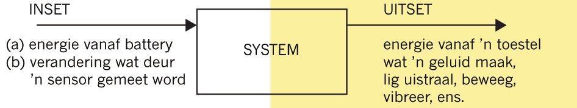
Figuur 6: 'n Stelsel diagram van 'n beheerstroombaan
Figuur 7 wys hoe diestroombaan in figuur 5 as'n stelsel diagram sal lyk.
Figuur 7
Identifiseer die verskillende komponente en teken die stroombaan
Die stroombaan vir die brandalarm bevat die volgende komponente:
- • 'n battery wat bestaan uit 6 selle in serie gekoppel,
- • 'n inset sensor om die temperatuur te meet,
- • 'n veranderlike resistor om die temperatuur te stel vir wanneer die alarm moet afgaan,
- • 'n uitsettoestel wat 'n geluid sal maak wanneer dit te warm raak, en
- • 'n transistor om die uitsettoestel aan te skakel wanneer dit te warm word.
1. Watter tipe elektroniese komponent sal jy as die inset sensor gebruik?
2. Watter tipe toestel sal jy as die uitsettoestel gebruik?
3. Watter stroombaanspanning verskaf die battery aan die stroombaan?
4. Teken 'n stroombaandiagram vir die brandalarm:
(a) Gebruik die korrekte simbole vir die komponente wat jy as die inset sensor en uitsettoestel gaan gebruik.
(b) Dui die stroombaanspanning van die battery aan.
(c) Dui ook die emittor ("e"), basis ("b") en kollektor ("c") aan (kyk weer na wat jy in hoofstuk 3 geleer het oor transistors).
|
|

Figuur 8: 'n Stroombaandiagram wat die verskillende komponente van 'n brandalarm wys.
Die doel van die veranderlike resistor R1 is reeds verduidelik. Die doel van die ander twee resistors is moeilik om te verduidelik. Dit het te make met die minimum stroom wat nodig is om te vloei na die basis van die transistor, om sodoende toe te laat dat stroom van die emittor na die kollektor van die transistor kan vloei. Indien jy sou besluit om verder elektronika by 'n FET of 'n universiteit te studeer, sal jy leer oor die funksies van hierdie resistors en ook hoe om hulle weerstand te bereken.
Iemand het reeds die berekeninge van die weerstande van die verskillende komponente gedoen. Hierdie weerstandswaardes moet gebruik word sodat die brandalarm kan werk. Dit word die spesifikasies vir die weerstande van komponente genoem.
- • R1 = 700 to 1400 kΩ (veranderlike resistor)
- • R2 = 820 Ω
- • R3 = 1 kΩ
- • inset sensor: 10 kΩ
5. Dui die gespesifiseerde weerstande van die komponente op jou stroombaandiagram aan.

5.3 Bou 'n brandalarmstroombaan
Werk in pare om die stroombaan te bou.
Jy het die volgende materiale nodig om die stroombaan te bou:
- • 'n 9 volt-battery met 'n verbindingsklem met rooi (+) en swart (–) drade,
- • geleierdraad met 'n kaaimanklem,
- • 'n 10 kΩ NTK termistor,
- • 'n 700 tot 1 400 kΩ veranderlike resistor;
- • 'n 820 Ω en 'n 1 kΩ resistor,
- • 'n npn transistor, en
- • 'n gonser.
1. Bou nou die stroombaan. Stel die veranderlike resistor op sy laagste weerstand.
2. Sodra jou stroombaan voltooi is, maak dubbel seker dat al jou koppelings goed gedoen is.
3. Koppel dan die battery aan die stroombaan.
4. Toets nou die brandalarm: verhit 'n duimspyker deur dit in 'n uitveër te druk en vryf dit dan hard vir 'n minuut lank teen 'n stuk hout of plastiek. Raak nou die termistor met die duimspyker aan.
Foutopsporing
Indien die brandalarm nie werk nie:
- • toets om te seker te maak dat die battery nie pap is nie,
- • toets weer al jou komponente,
- • volg die stroom om jou stroombaan met jou vinger om seker te maak dat jy al die komponente korrek gekoppel het, en
- • maak seker dat jy die transistor op die regte manier gekoppel het.
Indien jy tyd oor het: Bou ‘n tydvertragingstroombaan
Kapasitors word gereeld in tydvertragingstroombane gebruik.
Jy benodig die volgende:
- • vier 1,5 V selle in serie, of 'n 9 V-battery,
- • twee LEDs,
- • 'n 470 Ω resistor,
- • 'n 1 000 μF kapasitor, en
- • 'n SPDT-skakelaar.
 Figuur 9: 'n
Tydvertragingstroombaan
Figuur 9: 'n
Tydvertragingstroombaan
1. Bou die stroombaan. Plaas die skakelaar in posisie A en bestudeer die LEDs. Beskryf volledig wat gebeur.

Verdere leesstof:Borde waarop meer gekompliseerde stroombane gebou word
Indien jy probeer om 'n meer gekompliseerde stroombaan te bou deur komponente te koppel met geleidraad en kaaimansklemme, sal baie drade mekaar oorkruis en die stroombaan sal morsig lyk; soos toue wat gekoek is.
Om 'n gekompliseerde stroombaan netjieser en kleiner te maak, word die meeste stroombane op borde gebou, soos "broodborde", "strookborde", en "gedrukte stroombaanborde" (GSB).
Figuur 10 hieronder wys 'n eenvoudige LED stroombaan, soos die een van jy in afdeling 5.1 gebou het, maar hier is dit op 'n strookbord gebou. Let op dat daar geen verbindingsdrade gebruik is om hierdie stroombaan te bou nie! Die rede hiervoor is dat daar aan die onderkant van die strookbord parallelle koperstroke is wat die gate in elke kolom koppel. Dit maak dit moontlik die stroombaan te bou sonder om van stukke draad gebruik te maak.
Figuur 10: 'n Eenvoudige LED stroombaan wat op 'n strookbord gebou is
 Figuur 11: Een moontlike uitleg van
die eenvoudige LED stroombaan op 'n strookbord.
Figuur 11: Een moontlike uitleg van
die eenvoudige LED stroombaan op 'n strookbord.
Figuur 11 wys een moontlike uitlegplan om die eenvoudige LED stroombaan op 'n strookbord te bou. Die koperstroke onder die bord is nie sigbaar van bo af nie, daarom is die koperstroke op die skets van die uitleg in arsering geteken om te wys dat jy dit nie van bo af kan sien nie.
Die pyle op figuur 11 help jou om te verstaan hoe die stroom deur die koperstroke agter op die bord vloei. Die stroom vloei in die rigting van die pyle.
Die konnektor van elke komponent word aan die koperstroke vas soldeer aan die onderkant van die strookbord. Dit is om seker te maak dat daar goeie elektriese kontak met die koperstroke is.
Soldering word met lood gedoen omdat lood 'n goeie elektriese geleier is en ook omdat dit 'n lae smeltpunt het. Dit is dus maklik en vinnig om lood met 'n soldeerbout te smelt.
Broodborde en gedrukte stroombaanborde is ander tipe borde wat gebruik word om gekompliseerde stroombane te bou; hulle het ook koperstroke aan die agterkant, maar hierdie stroke is op 'n ander manier rangskik as die van 'n trookbord.Figuur 13 wys die koppelings aan die agterkant van 'n broodbord.
Figuur 12: Soldering van komponente aan die agterkant van 'n strookbord.


Figuur 13: Die voor- en agterkant van 'n broodbord
Met 'n broodbord is dit nie nodig om die koppelings te soldeer nie, aangesien elke gat in die broodbord 'n veertjie het wat die drade styf vasgryp om goeie elektriese kontak te verseker.
Byna alle vervaardigde elektroniese toestelle gebruik gedrukte stroombaanborde, waar die koperstroke aan die agterkant enige patroon kan aanneem. Dit maak dit moontlik om baie klein gekompliseerde stroombane te maak.

Figuur 14: Die voor- en agterkant van 'n gedrukte stroombaanbord
Volgende week
Die volgende hoofstuk is jou Mini-PAT vir die kwartaal. Jy gaan leer hoe 'n elektroniese stroombaan gebruik kan word om 'n ander stroombaan, met 'n veel groter stroom, te beheer. Jy gaan 'n toestel bou deur albei stroombane te gebruik en jy gaan dit daarna toets.
In hierdie Mini-PAT gaan jy eerstens bestudeer waar elektroniese stroombane (met baie lae stroom) gebruik word om elektriese stroombane (met 'n baie hoër stroom) te beheer. Daarna gaan jou eie elektriese stroombaan ontwerp en bou wat beheer word deur 'n elektroniese stroombaan.
Week 1 72
Ondersoek: Situasies waar elektroniese beheerstelsels benodig word
Ondersoek: 'n Stroombaan met 'n inset sensor, beheerknoppie, transistor en uitsettoestel
Ontwerpopdrag en aanvanklike sketse
Week 2 80
Evalueer: Spanvergadering om die beste kombinasie ontwerp idees te kies
Ontwerp: Verbeter jou ontwerp as 'n span
Beplan om te maak: Ortografiese en 3D-tekeninge van die insettoestel
Week 3 85
Maak die skakelaar
Koppel die skakelaar aan die elektroniese stroombaan en toets dit
Week 4 89
Kommunikeer: Berei 'n spanaanbieding voor
Kommunikeer: Lewer jou aanbieding vir die klas en luister na die ander spanne se aanbiedings
Assessering
Situasies waar elektroniese stroombane, elektriese stroombane beheer (individuele werk) [5]
Ontwerpopdrag en sketse (individuele werk) [12]
Evalueer en verbeter die ontwerp (spanwerk) [8]
Finale tekeninge van die ontwerp (individuele werk) [15]
Maak die skakelaar (individuele werk) [25]
Aanbieding (spanwerk) [5]
[Totale punt: [70]

Figuur 1: Alledaagse toestelle wat elektroniese beheerstroombane gebruik
Week 1
Situasies waar elektroniese stroombane, elektriese stroombane beheer (30 minute)
Daar is baie huishoudelike toestelle wat elektroniese stroombane gebruik om elektriese stroombane met hoër stroom, te beheer.
Die volgende twee toestelle word binne die elektriese skakelbord (of verspreidingsbord) van elke gebou wat op 'n veilige wyse aan elektrisiteit gekoppel is, gebruik.
'n Elektroniese stroombaan verskil van 'n elektriese stroombaan omdat dit 'n baie lae stroom gebruik, en ook omdat dit elektroniese beheertoestelle soos 'n termistor, LAR, diode en transistor gebruik.
- • Algemene stroombrekers: Skakel die stroombaan af (byvoorbeeld, die stroombaan wat al die ligte in 'n huis van krag voorsien) wanneer die stroom te hoog word (indien die stroom te hoog is vir die dikte draad wat gebruik is, sal die draad oorverhit).
- • Oorblywende-stroombaan stroombrekers: Wanneer daar 'n kraglekkasie bespeur word, skakel dit die hoof elektrisiteitstoevoer af, byvoorbeeld wanneer 'n persoon aan 'n "draad onder stroom" raak. Die elektrisiteit word dan deur die persoon se liggaam gelei. Hierdie toestel moet die stroom vinnig afsny om te verhoed dat die persoon as gevolg van elektriese skok doodgaan. Daarom sny dit die krag af, selfs al is daar slegs 'n klein hoeveelheid lekkasie van krag van die elektriese stroom.
 Figuur 2: 'n Elektriese
verspreidingsbord met stroombrekers
Figuur 2: 'n Elektriese
verspreidingsbord met stroombrekers
Die volgende huishoudelike toestelle word deur elektroniese stroombane beheer:
- • Oonde: om die temperatuur te beheer.
- • Radio's en ander musiektoestelle: om die volume van die luidsprekers te beheer.
- • Sommige energie-besparing-ligte: om hulle outomaties af te skakel wanneer daar genoeg natuurlike lig is.
- • Ketels: om hulle af te skakel wanneer die water kook.
1. Gee twee voorbeelde van situasies of toestelle waar elektriese stroombane gebruik word. (1)
2. Gee twee voorbeelde van situasies of toestelle waar elektroniese stroombane gebruik word.(1)
3. Gee drie voorbeelde van situasies of toestelle waar elektroniese stroombane en elektriese stroombane saam gebruik word.(3)
Totaal [5]

Ondersoek: ‘n Stroombaan met ‘n inset sensor, beheerknoppie, transistor en ‘n uitsettoestel(15 minute)
'n Sensor is 'n beheertoestel wat 'n veranderlike effek kan hê. 'n Skakelaar kan slegs oop (oneindige hoë weerstand) of toe (zero weerstand) wees, dus is 'n skakelaar nie 'n sensor nie. Toestelle soos 'n termistor en LAR kan verskillende weerstande hê, afhangende van die temperatuur of die hoeveelheid lig. Hulle kan daarom as sensors gebruik word. 'n Toestel wat 'n stroomweerstand kan opwek, soos byvoorbeeld 'n fotovoltaïese sel, kan ook as 'n sensor gebruik word. 'n Sensor "voel" iets soos temperatuur of lig, net soos wat jou liggaam se sintuie doen. 'n Veranderlike resistor is ook 'n beheertoestel maar dit is nie 'n sensor nie, omdat dit 'n toestel is waarmee die gebruiker die weerstand kan stel.
Die stroombaan vir die brandalarm wat jy in hoofstuk 5 gebou het, kan gebruik word vir verskillende toepassings waar 'n lae insetstroom van 'n inset sensor, 'n stroom met 'n hoër stroom vir 'n uitsettoestel moet aanskakel. Daar is ook 'n veranderlike resistor sodat die gebruiker kan bepaal teen watter vlak van lig of temperatuur die uitsettoestel aan- of afgeskakel moet word.

Figuur 3: Die beheerknoppie van 'n stoof is gekoppel aan 'n veranderlike resistor. Dit beheer die stroom wat deur die verhittingselement vloei. Hoe hoër die stroom, hoe warmer sal die plaat wees.

Figuur 4: Die beheerstroombaan wat jy in hoofstuk 5 gebou het vir die brandalarm
1. Noem drie insetkomponente waarvan jy weet.
2. Noem drie uitsettoestelle waarvan jy weet.
3. Noem 'n toestel wat 'n beheerknoppie gebruik om die vlak van iets te beheer.

Ontwerpopdrag en aanvanklike sketse(75 minute)
Die scenario vir die Mini-PAT
'n Ketel gebruik elektrisiteit teen 'n tempo wat 30 maal meer is as die van 'n gewone gloeilamp. Baie elektrisiteit kan bespaar word indien die ketel ekonomies gebruik word.
Indien 'n ketel aanhou kook sonder om afgeskakel te word, hou dit aan om elektrisiteit te gebruik. Dit is 'n mors van elektrisiteit.
Indien jy jou tee of koffie sonder melk drink, wil jy nie kokende water (100 °C) hê nie, omdat dit jou sal brand. Dit is dus 'n mors van elektrisiteit en ongerieflik om die water tot by kookpunt te bring (100 °C). Die meeste van die tyd het 'n ketel slegs nodig om die water tot by 75 °C te verhit. Indien die ketel aanhou om die water tot by 'n temperatuur van 100 °C te verhit, is dit 'n mors van elektrisiteit.

Figuur 5
Jy gaan nou 'n "energie-besparende skakelaar" vir 'n ketel ontwerp en maak. Die skakelaar moet beheer word deur 'n elektroniese stroombaan sodat die ketel outomaties afskakel wanneer die water die vereiste temperatuur bereik. Die elektroniese stroombaan benodig 'n veranderlike resistor sodat die temperatuur waarop die ketel moet afskakel, deur die gebruiker gestel kan word.
Die tekeninge hieronder wys hoe 'n elektriese deurslot werk. Dit mag jou dalk 'n paar bruikbare idees gee vir jou ontwerp van die energie-besparende ketelskakelaar.

Figuur 6: 'n Elektriese deurslot
Bo aan die regterkant van die slotmeganisme is daar 'n ligte bruin gepunte deel. Hierdie deel beweeg in of uit om die deur oop te maak of te sluit. Hierdie deel word 'n "klink" genoem.

Figuur 7: 'n 3D-werktekening van die onderdele binne 'n elektriese deurslot
Ontwerpopdrag
1. Wat is die doel van die skakelaar wat jy gaan ontwerp?
Wenk: Dink daaraan oor hoe maklik dit vir mense is om dinge te doen, die impak wat dit op die omgewing sal hê, en die koste.(½)
Spesifikasies
2. Watter onderdele moet die toestel bevat waar die gebruiker iets met die hand moet druk of draai?(½)
3. Is daar ander onderdele van die toestel wat soms deur die gebruiker beweeg moet word, en wat soms outomaties beweeg moet word?(1)
4. Hoe moet die bewegende dele van jou skakelaar werk? Byvoorbeeld; wat moet veroorsaak dat dit in een rigting beweeg, en wat moet veroorsaak dat dit in die ander rigting beweeg? Gebruik name vir die verskillende bewegende onderdele, en ook vir die ander onderdele wat die bewegende dele laat beweeg of ophou beweeg.(2)
5. Watter tipe elektriese komponent kan die outomatiese beweging wat jou toestel nodig het, uitvoer? Hierdie komponent sal die uitsettoestel in die beheerstroombaan op bladsy 74 wees.(½)
6. Het jou toestel 'n houer of ondersteuningstruktuur nodig om al die onderdele bymekaar te hou? Watter tipe houer of struktuur dink jy sal goed werk?(½)
Beperkings
7. Maak 'n lys van al die materiale wat jy gaan nodig kry.(1)
gedraai is
en daar moet ook ʼn plek wees waar die draaipunt van die skakelaarhefboom vir
die skakelaar geheg kan word
8. Maak 'n lys van al die gereedskap wat jy gaan nodig hê.(½)
9. Maak 'n tydskedule wat wys hoeveel tyd jy het om die produk te ontwerp en te maak.(½)
Ontwerpsketse
10. Maak ten minste twee rowwe sketse van jou ontwerp. Gebruik byskrifte en notas om jou ontwerp te verduidelik. Indien jou tweede skets 'n verbetering is op jou eerste skets, hou die eerste skets, maar merk jou tweede skets as: "verbeterde ontwerp".(5)
|
Leerders se eie idees. Hulle moet ten minste twee verskillende ontwerp idees skets. ʼn Skets van een moontlike ontwerp word hieronder gewys. Let op dat die leerders nog twee geleenthede sal hê om hulle ontwerpe te verbeter en te skets. Hulle ontwerp hoef dus nie hier so goed of volledig soos die voorbeeld hieronder te wees nie.
|
Totaal [12]

Week 2
Evalueer as ‘n span: Leer van mekaar se ontwerpe om ‘n beter ontwerp saam te maak(60 minute)
1. Elke spanlid moet sy/haar ontwerp aan die resvan die span verduidelik. Die res van die spanmoet vrae vra indien hulle onseker is oor iets.
2. Nadat almal hulle ontwerpe verduidelik het,moet elke spanlid 'n lys maak van die voor- en nadele van hul eie ontwerpe.
Daar is nie so iets soos 'n perfekte ontwerp nie! Jy kan byvoorbeeld ‘n gekompliseerde ontwerp maak wat baie goed sal werk, maar dit sal duur wees en moeilik wees om te bou. Of jy kan 'n eenvoudige ontwerp maak wat werk, maar wat nie sterk sal wees nie.
Leer van die verskillende ontwerpe wat mense gemaak het
Indien daar 'n probleem is met jou idee, moet dit nie sommer net so verwerp nie. Skets eers jou idee en verduidelik dit aan die ander. Hierdie idee kan lei na 'n beter idee. Sou almal hulle idees te vinnig verwerp, dan sal daar geen idees oor wees om mee te werk nie. Ontwerpspanne werk wanneer hulle die werk in twee fases verdeel:
-
• Eerstens
moet jy idees ontwikkel, skets en danverduidelik, sonder
dat enige iemand ietsnegatief oor die idees sê.
Indien enige iemand 'n negatiewe aanmerking maak, moet iemand anders sê: "Rooi vlag! Geen negatiewe opmerkings in hierdie fase nie."
-
• Sodra jy
baie idees het om mee te werk, beginnou dink aan hoe en of
die idees wel sal werk.Moenie praat oor "Mary se ontwerp"
en "Siphose ontwerp" nie. Praat eerder van "Ontwerp C"
en"Ontwerp B". Sodra iemand se ontwerp op dietafel is,
praat jy oor die ontwerp en nie oor diepersoon nie. Jy
evalueer die ontwerpe; jy evalueernie jouself of iemand
anders nie.
Indien dinge gesê word soos: "Mary het so 'n swak ontwerp gemaak" en "Sipho se ontwerp is baie beter", sal dit mense laat sleg en skaam voel en ander mense sal trots en selfs arrogant voel. Indien iemand sê: "Mary se ontwerp", moet iemand anders sê "Rooi vlag! Ons noem daardie ontwerp, Ontwerp C."
3. Kombineer nou die verskillende goeie idees van verskillende ontwerpe in een beter ontwerp. Jou span kan slegs suksesvol hiermee wees indien julle "kreatief" saam gesels en skets. Kreatief beteken dat jy "met idees rondspeel".
Deur vele rowwe sketse te maak, sal jy verseker dat jou span goed en kreatief met mekaar kommunikeer. Doen dit in die spasie wat hieronder verskaf word. Sluit byskrifte en notas in om jou te help om die sketse te verduidelik. (4)
|
Leerders se eie idees. Hulle moet ten minste twee rowwe sketse maak wat verskillende aspekte van die ontwerp wys. Die ontwerpsketse hoef nie nou al finaal te wees nie, dus kan leerders sketse maak van ontwerpaspekte wat steeds problematies is en wat later verander sal word. |
4. Nou moet elke persoon sy/haar eie skets maak van die verbeterde ontwerp wat die span saam gemaak het. Weereens moet jy byskrifte en notas byvoeg om jou skets te verduidelik.
Maak ten minste twee sketse sodat die hele ontwerp en die versteekte detail gesien kan word. Dalk moet jy die skets van verskillende aansigte teken, of dalk moet jy van die dele apart teken.(4)
|
Leerders se eie idees. Hulle moet ten minste twee sketse maak wat verskillende dele van die span se ontwerp wys, of wat die ontwerp van verskillende aansigte wys. Hierdie sketse moet netjieser wees as die rowwe sketse van die vorige bladsy. Die finale ontwerp moet duidelik gesien kan word. |
Totaal [8]

Maak individueel: 2D-werktekening en 3D-tekeninge van jou ontwerp(60 minute)
1. Maak 'n 2D-werktekening van jou ontwerp in eerstehoekse ortografiese projeksie. Dit moet volgens skaal geteken wees en soveel as moontlik detail wys. Wys die afmetings en skaal. Wys al die verskuilde detail.(8)
|
|
2. Maak 'n isometriese tekening van jou ontwerp volgens skaal. Moet nie die houer of die strukturele ondersteuning van die binne dele van jou ontwerp wys nie; wys slegs die binne dele. Moet nie enige verskuilde detail wys nie, maar kies jou aansigpunt op so manier dat daar soveel as moontlik details sigbaar is. Wys die skaal, maar nie die afmetings nie.(7)
|
|
Totaal [15]

Huiswerk: Beplan om te maak en maak jou materiaal bymekaar
Maak 'n lys van die materiale en gereedskap wat jy gaan nodig kry om volgende week die model vir jou outomatiese ketelskakelaar te bou. Jy moet die materiaal insluit wat jy gaan nodig hê om die uitsettoestel vir die beheerstroombaan te bou. Hierdie deel gaan jy later koppel aan die model van jou skakelaar. (Kyk weer na jou antwoord vir vraag 5 op bladsy 78.)
Indien daar enige materiale op jou lys is wat nie by die skool beskikbaar is nie, versamel afvalmateriaal wat jy eerder kan gebruik en bring dit volgende week skool toe. Indien jy dit nie gaan doen nie, gaan jy nie volgende week in staat wees om die model van jou ontwerp te bou nie.

Week 3
Maak en toets jou prototipe van die skakelaar(120 minute)
1. Werk alleen om die model vir die ontwerp vanjou skakelaar te bou. 'n Model van 'n nuweontwerp word 'n prototipe genoem.
2. Werk alleen om die uitsettoestel vir diebeheerstroombaan te bou. Jy gaan dit lateraan jou skakelaar koppel.
Ontwerpers en ingenieurs maak gewoonlik eers prototipes voordat 'n ontwerp goed genoeg is om dit te begin vervaardig en verkoop. Elke prototipe probeer om te verbeter op die vorige een.
3. Toets jou model met 'n eenvoudige stroombaanwat bestaan uit 'n battery en die elektrieseuitsettoestel wat jy gemaak het.
4. Toets jou model deur dit aan die beheerstroombaan wat jy in hoofstuk 5 gemaak het, te koppel.
(a) Voordat jy die beheerstroombaan koppel, moet jou span eers die beheerstroombaan toets soos wat jy dit voorheen getoets het op bladsy 64. Daar kan dalk konneksies wees wat losgekom het.
(b) Om jou outomatiese ketelskakelaar te toets, gebruik weer die duimspyker wat jy in 'n uitveër druk het en warm gemaak het deur dit vir 'n minuut lank teen 'n stuk hout of plastiek te vryf.
(c) Indien jy nie die beheerstroombaan suksesvol gebou het in hoofstuk 5 nie, kan jy die eenvoudige stroombaan, wat in vraag 3 hierbo bespreek is, gebruik om die modelskakelaar te toets.
5. Jy sal heel moontlik uitvind dat jou model nie die eerste maal wat jy dit toets werk nie. Dit is normaal! Baie nuwe dinge wat mense ontwerp werk nie die eerste maal wat hulle dit toets nie. Probeer uitvind wat die fout is, maak dit reg en toets weer jou model.
Jou onderwyser gaan punte soos volg toeken:
- • Jy het al die materiale gebring wat jy nodig het vir die maak van 'n model van jou ontwerp.(2)
- • Jy het die model akkuraat en volgens jou ontwerptekeninge gemaak.(8)
- • Jy het die elektriese uitsettoestel suksesvol gebou.(2)
- • Jy het die model aan 'n eenvoudige stroombaan gekoppel, sonder die uitsettoestel, en jy het 'n goeie metode van toetsing gevolg.(1)
- • Nadat jy jou model vir die eerste maal getoets het, het jy 'n lys gemaakvan al die moontlik redes oor waarom jou model dalk nie werk nie, ofwaarom jou model nie te goed werk nie.(2)
- • Jy het die lys wat jy hierbo gemaak het, gebruik om jou model reg temaak of te verbeter.(2)
- • Jy het jou model ten minste nog een maal getoets. Jy het die probleme neergeskryf en weer die foute reggemaak of die model verbeter totdatdit goed werk.(4)
- • Jou model werk, of jy het 'n goeie verduideliking geskryf en sketsegemaak oor wat jy nog moet doen en verander om te verseker dat joumodel sal werk.(4)
Totaal [25]
Jy moet 'n verslag hou van al die toetse en verbeterings wat jy aan jou model gemaak het; indien jy dit nie doen nie, sal jy nie punte kry vir daardie werk nie. Gebruik die volgende twee bladsy om verslag te hou, en teken sketse waar jy dink dit nodig is.
Verslaghouding van jou toetse van en verbeteringe aan jou prototipe.


Week 4
Bied jou ontwerpproses en finale prototipe aan
Jou span gaan later in die week 'n aanbieding doen van jou projek. Die aanbieding moet tussen drie en vyf minute lank wees. Elke lid van die span moet 'n gedeelte van die aanbieding doen. Ander leerders in die klas mag dalk na afloop van die aanbieding vrae vra.
Dit is belangrik dat jou aanbieding meestal sal handel oor die ontwerpproses wat jy gevolg het om die prototipe te ontwerp, te maak en te verbeter.
Spanvergadering: Berei die aanbieding voor(30 minute)
1. Besluit watter deel van die aanbieding elkeen van julle gaan doen. Skryf dit hieronder neer.(1)
2. Besluit in watter volgorde julle die verskillende dele van die aanbieding gaan doen. Wie gaan eerste praat, en wie gaan volgende praat?
Skryf die dele van die aanbieding in die volgorde wat julle dit gaan doen hieronder neer. Skryf ook neer wie gaan watter deel aanbied.(1)
3. Vir huiswerk moet jy jou deel van die aanbieding oefen.
Totaal [2]

Lewer die aanbiedings (90 minute)
Jou onderwyser gaan na die volgende kyk om punte vir jou aandeel in die span se aanbieding toe te ken:
- • Jy was goed voorbereid vir jou aanbieding.(2)
- • Jy het verduidelik hoe jy verbeter het gedurende die ontwerpproses.(2)
- • Jy het na jou gehoor gekyk en duidelik gepraat.(1)
Totaal [5]

‘n Alternatief vir die ketelskakelaar-projek: Ontwerp en bou ‘n stroombaan kontinuïteitstoetse
Jou onderwyser mag dalk besluit dat jy die volgende projek doen in plaas van dieontwerp en bou van 'n outomatiese ketelskakelaar.
Heel dikwels wanneer mense drademoet koppel, is daar soveel dradedat dit moeilik is om te weet wattertwee draadpunte is deel vandieselfde draad.
Dit sal handig wees om 'n toestelte hê wat kan aandui of tweedraadpunte gekoppel is of nie.Dit is wat die "kontinuïteitstoetser"doen.
Figuur 8
'n Kontinuïteitstoetser is eintlik 'n oop stroombaan.Die stroombaan kan alleenlik gesluit word deur dietwee draadpunte wat jy wil toets. Gebruik die tweetoets leidingsdrade van die kontinuïteitstoetser omaan die twee draadpunte wat jy wil toets, te raak. Indiendaar 'n baan vir die stroom is om tussen die tweedraadpunte gelei te word, sal dit die stroombaan voltooi en'n lig of gonser op die kontinuïteitstoetser sal geaktiveer word.
Veiligheidswaarskuwing:
Skakel eers die kragtoevoer af voordat jy so 'n toets wil doen.
Neem kennis dat die kontinuïteitstoetser nie kan aandui of die twee punte wat jy toets deel van dieselfde draad is nie. Dit kan slegs aandui of daar 'n baan is vir die stroom om tussen die twee draadpunte gelei te word, dit dui dus aan of die twee drade elektries gekoppel is. Indien jy weet dat daar geen splitsing of koppeling van drade tussen die twee draadpunte is nie, dan kan die draadpunte slegs elektries gekoppel wees indien dit dieselfde draad is.
Wanneer jy die kontinuïteitstoetser as jou projek gaan doen, moet jy die volgende in ag neem:
- • Dit moet maklik wees om die toetsleidingsdrade van die kontinuïteitstoetser te laat kontak maak met die draadpunte.
- • Die toetser moet klein wees.
- • Die toetser moet beskermd wees teen skokke, byvoorbeeld wanneer dit laat val word.
- • Die toetser moet beskermd wees van water, aangesien water 'n kortsluiting kan veroorsaak.
'n Paar idees vir die bou van die kontinuïteitstoetser word in die foto's hieronder gewys.

Figuur 9
Figuur 10